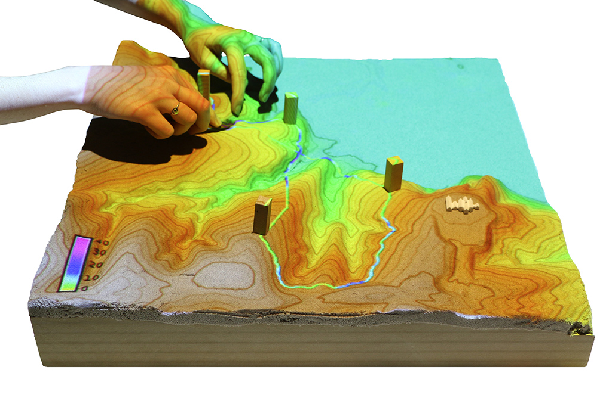
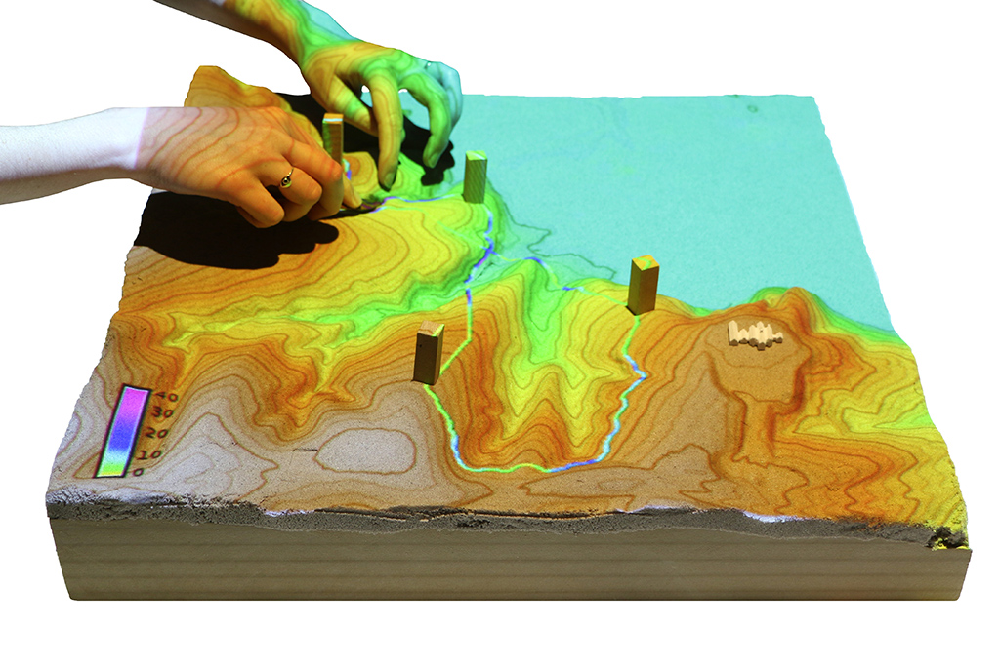

American Association of Geographers 2016
Creative spatial thinking with Tangible Landscape
Brendan Harmon, Anna Petrasova, Vaclav Petras, Helena Mitasova, & Ross Meentemeyer


An evolution of Illuminating Clay and the Tangible Geospatial Modeling System
Image source: MIT Media Lab
With Tangible Landscape you can hold a GIS in your hands - feeling the shape of the earth, sculpting its topography, and directing the flow of water.

Tangible Landscape couples a digital and a physical model through a continuous cycle of 3D scanning, geospatial modeling, and projection


Tangible Landscape is designed to make scientific data, models, and simulations exploratory, engaging, and fun


Solar irradiation and cast shadow
 



Optimized trail routing between waypoints based on energetics, topography, and cost maps with feedback including trail slopes and viewsheds


Structured problem solving with rules, challenging objectives, and scoring


Theoretically tangible interaction should offload cognitive processes through bodily action, physical simulation, and digital computation
A comparative study of 3D spatial performance with hand modeling, digital modeling, and tangible interaction


Spatial statistics: the standard deviation of the differences of all participants using each technology

Fork us on GitHub
Repository with experiment instructions, scripts, data, and results

Read our book and give it a try